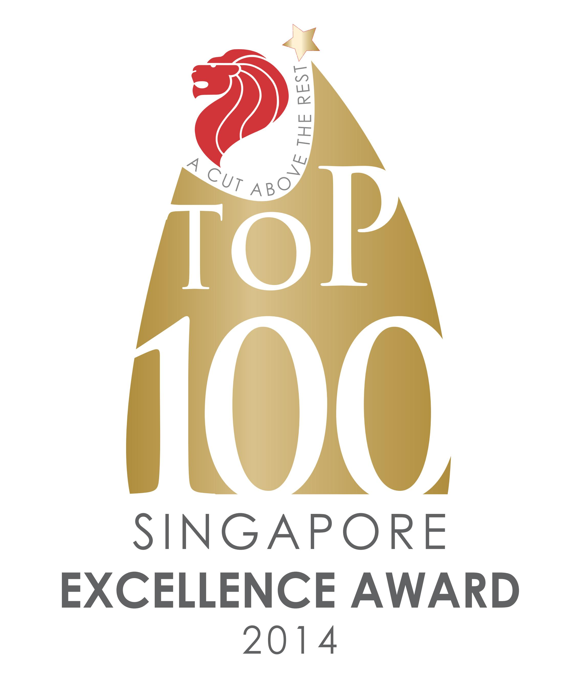
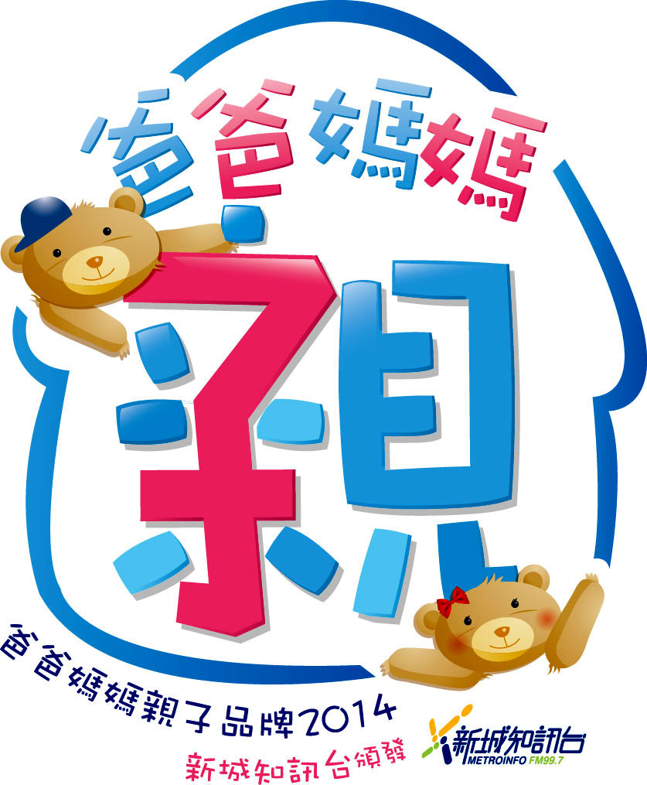

3297
SUCCESSFUL CASES
100%
LEARN TO SPEAK
45YRS
OF SCIENTIFIC RESEARCH
300+
HRS OF STAFF TRAINING
About Us
Autism Recovery Network (ARN) is the leading Applied Behaviour Analysis (ABA) service provider in Asia for children with Autistic Spectrum Disorders (ASD). We have been providing effective quality treatment programmes in Hong Kong, Singapore, Manila, Taiwan and Indonesia since 2005.At ARN, our mission is to offer the best quality early intervention programme tailored to the unique needs of your child. We treat every child as an individual by:
- assessing their abilities and needs properly,
- customising a treatment programme, and
- working closely you as parents to achieve our shared goal of seeing your child function well and be able to successfully assimilate into mainstream society.
We pride ourselves on going the extra mile, whether it’s in terms of:
- investing heavily in staff training,
- constantly updating our methodology to stay current with new advances, or
- simply being there to support you as parents whenever you need it.
We do so because we believe in the ability of an effective ABA-VB therapy program to open doors in your child’s life and to maximise your child’s greatest potential.
Our Awards and Accolades





Our Story
Autism Recovery Network is known as the standard-setting provider of effective, high-quality early intervention programmes across Asia, including Hong Kong, Singapore, Indonesia, Taiwan and the Philippines.After moving to Hong Kong in the late 1990s, ARN’s Greek-born, Canadian-educated founder, Dino Trakakis, found that there was a distinct lack of autism therapy services in Asia. Moved by the desperate plight of families he knew who were going without treatment, Dino put his master’s degree in Psychology to work and banded with friends to invite experts in the autism field to conduct seminars and training for parents in ABA (Applied Behavioural Analysis).
At one of these seminars, he met Dr. Partington, the founder of a newer form of ABA, Verbal Behaviour (ABA-VB) and was deeply inspired by Dr Partington’s depth of knowledge and insightful approach to autism treatment, so different from the robotic approach of traditional ABA widely used by others.
Inspired by the effectiveness of ABA-VB, Dino set up the first branch of ARN in Hong Kong in 2005, with Dr. Partington acting as both mentor and consultant for the new therapy centre, as well as providing training for the staff.
Centres in Singapore and Indonesia were established in the following years, and ARN now has an over 150-strong team of clinicians and consultants who serve the greater Asian region.
Dino has an overwhelming desire to help every family that walks through ARN’s doors. He speaks passionately about treating children with autism as early as possible because he has seen first-hand the difference it can make.
Join our 3,000+ success cases. Make the first step towards recovery for your child today.
Our Collaboration with Google
When Google and Cornell University wanted to make a social robot that could help children on the autism spectrum, they sought out many early intervention providers to find the right partner.After many interviews, they chose Autism Recovery Network because they were impressed with the effectiveness of ABA-VB and the quality of our intervention.
We shared our extensive experience and in-depth knowledge with Google’s team about the social challenges faced by children with autism and how our therapy helps them to learn.
As part of our collaboration, we created videos and content for Google and Cornell University to use, and also participated in their beta testing. The result is Blossom, a handcrafted social robot that is soft on the inside and out. The robot is programmed by machine to move and express feelings in response to YouTube content.
Google’s eventual goal with Blossom is to create a social companion for children with autism, with the capability of displaying emotional reactions or interpreting social situations.